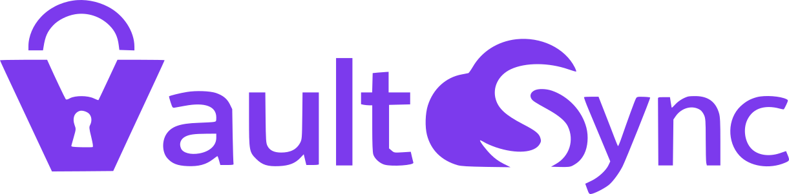

Cloud sync plugin for Obsidian
Vault-Sync seamlessly synchronizes your Obsidian vault across multiple devices through cloud storage. All sync operations run directly between your device and your cloud storage account — no intermediary servers involved.
Search for
Vault-Sync in Community plugins → Install
& Enable
Open the Vault-Sync settings tab and click Login.
A browser window opens for authentication — authorize access and you'll be redirected back to Obsidian automatically.
Your vault syncs automatically on startup and at regular intervals.
You can also trigger a manual sync from the ribbon icon or the command palette.
Sync your vault across desktop and mobile devices. Supports flexible triggers including startup, periodic, on save, and on file switch.
Three-way merge automatically resolves conflicts when the same file is edited on multiple devices. Choose from four strategies: smart-merge, force-local, force-remote, and always-fork.
Optionally encrypt your entire vault with AES-256-GCM before it leaves your device. Includes password change, recovery code export, and streaming encryption for large files. Your password never leaves your device.
Browse, compare, and restore past revisions of any file. Supports unified and split diff views with line-level comparison.
Choose exactly what to sync: themes, plugins, core settings, media files, dotfiles, and more. Exclude files with glob patterns.
Configure sync triggers independently for desktop and mobile, or use unified settings across all devices.
Large files are uploaded and downloaded in the background without blocking the UI. Configurable thresholds and concurrency limits.
OAuth2 with PKCE via a built-in proxy or your own credentials. Tokens are stored via Obsidian's SecretStorage API.
drive.file scope
for minimal, app-only access
Additional providers are planned for future releases.
Obsidian用クラウド同期プラグイン
Vault-Syncは、クラウドストレージを介してObsidianのVaultを複数デバイス間でシームレスに同期するプラグインです。すべての同期処理はデバイスとクラウドストレージ間で直接行われ、中間サーバーを経由しません。
コミュニティプラグインで
Vault-Sync を検索 → インストール&有効化
Vault-Syncの設定タブを開き、ログインをクリック。
ブラウザで認証画面が開くのでアクセスを許可すると自動的にObsidianに戻る。
起動時と一定間隔で自動的にVaultが同期される。
リボンアイコンまたはコマンドパレットから手動同期も可能。
デスクトップとモバイルの両方でVaultを同期。起動時、定期、保存時、ファイル切替時など、柔軟なトリガー設定に対応。
複数デバイスで同じファイルを編集した場合、自動的に競合を解決。他にもローカル優先、リモート優先、常にフォークといったマージ戦略から選択可能。
オプションでVault全体をAES-256-GCMで暗号化してからアップロード。パスワード変更、リカバリーコード、大容量ファイルのストリーミング暗号化に対応。パスワードがデバイス外に出ることはありません。
過去のリビジョンを閲覧・比較・復元。統合ビューとスプリットビューに対応し、行単位で差分を確認可能。
テーマ、プラグイン、コア設定、メディアファイル、ドットファイルなど、同期対象を細かく選択可能。globパターンを用いた除外設定にも対応。
デスクトップとモバイルで同期トリガーを個別に設定可能。全デバイス統一設定にも切替可能。
大容量ファイルはバックグラウンドでアップロード・ダウンロードし、UIをブロックしません。しきい値と同時接続数を設定可能。
PKCEベースのOAuth2認証。組み込みプロキシまたは独自の認証情報を選択可能。トークンはObsidianのSecretStorageに保存。
drive.fileスコープを使用し、アプリ専用ファイルのみにアクセス
今後のリリースで他のプロバイダにも対応予定です。